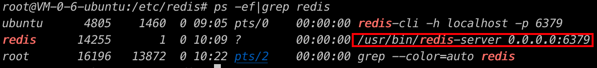
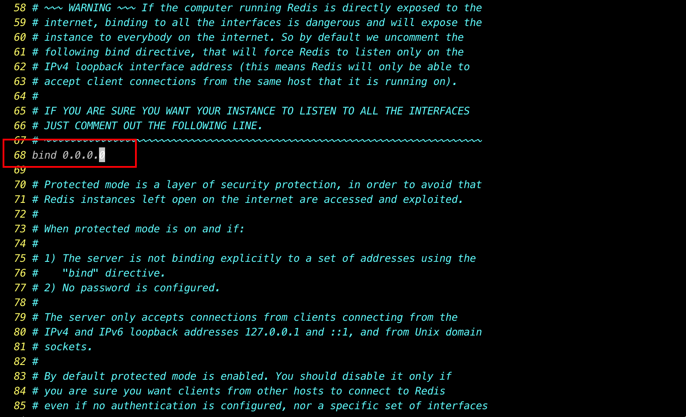
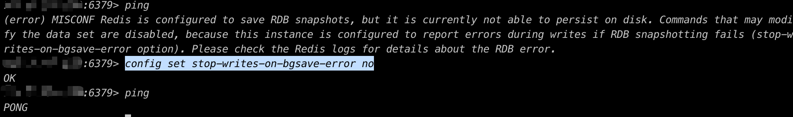

redis安装与使用
1、redis安装
安装环境：腾讯云服务器 Ubuntu 22.04
1、安装
1 | sudo apt install redis |
2、验证安装
1 | ps -ef|grep redis |

出现如上结果说明安装和启动成功，默认情况，上图红框中后面的IP应该是127.0.0.1（只有本机才能访问）
3、修改配置文件
通过apt 命令安装的redis，默认的redis配置文件路径为/etc/redis/redis.conf，我们切换root，修改该配置文件
1 | vim /etc/redis/redis.conf |

大概在文件的68行，将原来的127.0.0.1，修改为0.0.0.0，修改的目的是为了让redis能够远程访问。
4、重启服务
1 | sudo service redis-server restart |
5、远程连接测试
1 | $ redis-cli -h {ip} -p 6379 |
测试时可能会出现如下错误

输入如下命令
1 | config set stop-writes-on-bgsave-error no |

-------------本文结束感谢您的阅读-------------